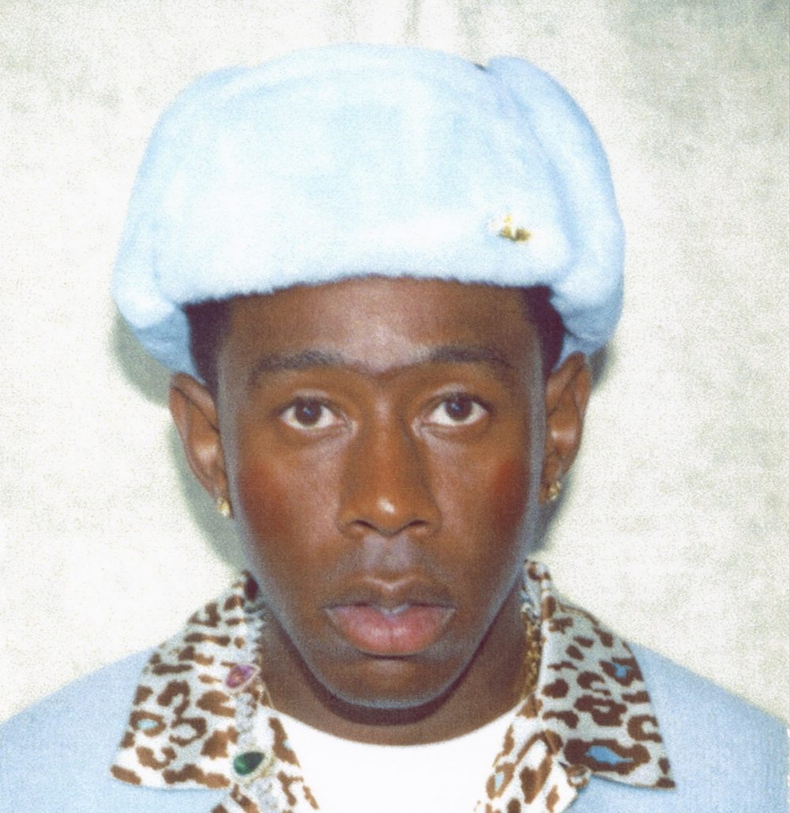

TYLER, THE CREATOR

Tyler, the Creator was born as Tyler Gregory Okonma in Los Angeles, California on March 6, 1991. He was raised by his mother in the Ladera Heights and Hawthorne Heights sections of L.A. Growing up Tyler, the Creator taught himself how to play the piano and would design his own album covers for existing albums.